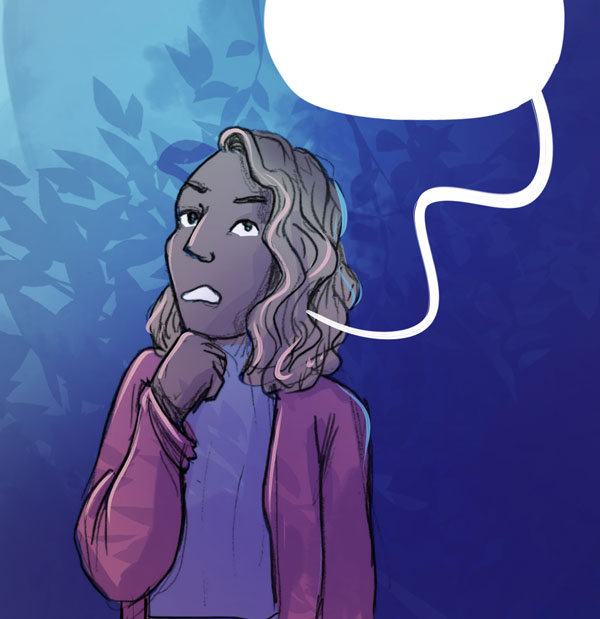
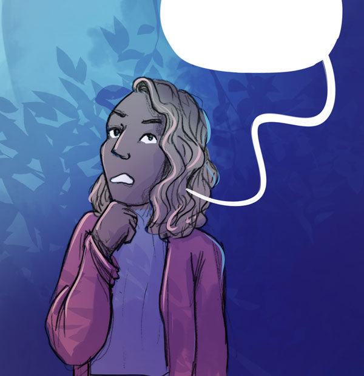
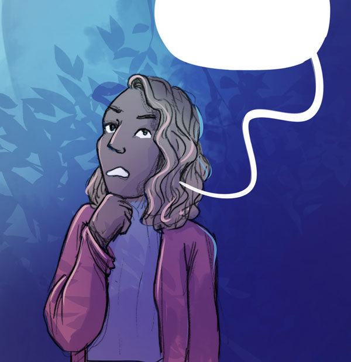
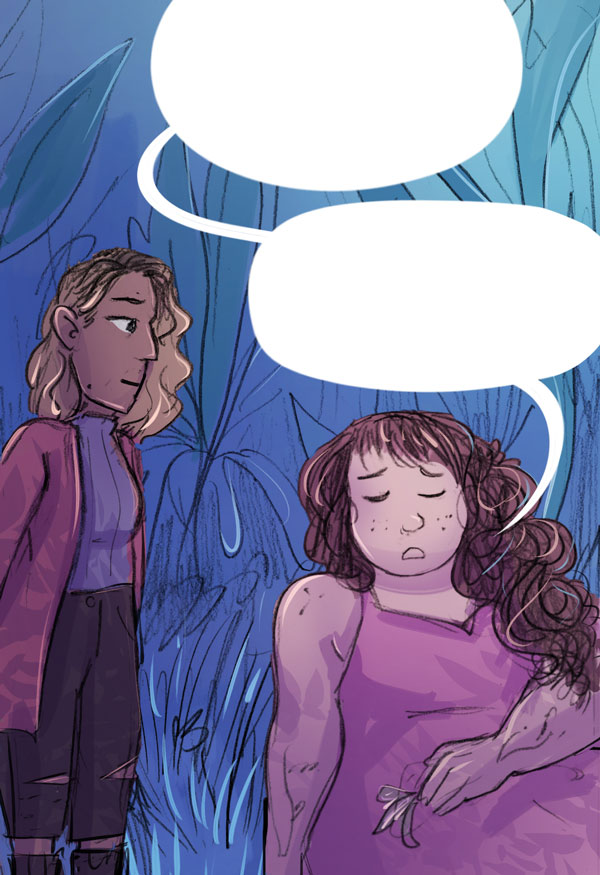
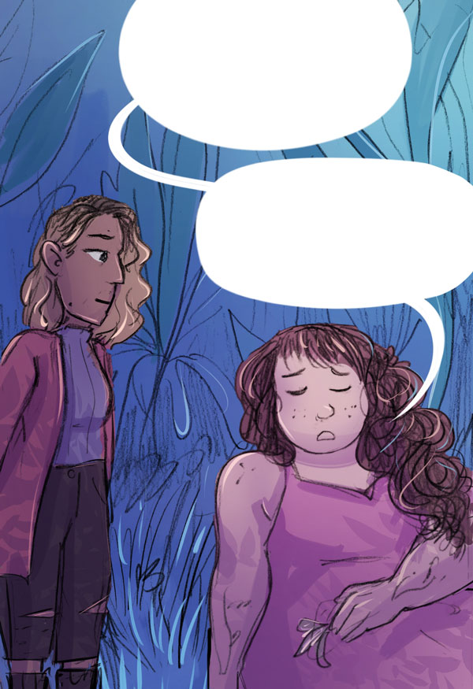

so this flower, they showed you what it looked like, right?
yes, it was small... white? curly bits...

so this flower, they showed you what it looked like, right?
yes, it was small... white? curly bits...
ah yes, I thought so.
I know where
it grows,
I think!

Ah, this is the grove where they grow...
...but where
are they?
oh!
...oh no!
it's dead!
 

are there others somewhere?
no... it won't
be anywhere else.
that's probably why they gave you this task.
well, crap.
So, how long exactly have you been here?
i don't know exactly, it's hard to tell...
do you remember anything?
I was... out walking..?
with my girlfriend,
i think...

wait, emilia...
are these
seeds...?
hmmm?
there!
this might... take a while...
yeah... plants don't just grow straight away..

Time is strange here, though
If we leave
and come back later, it might be grown...